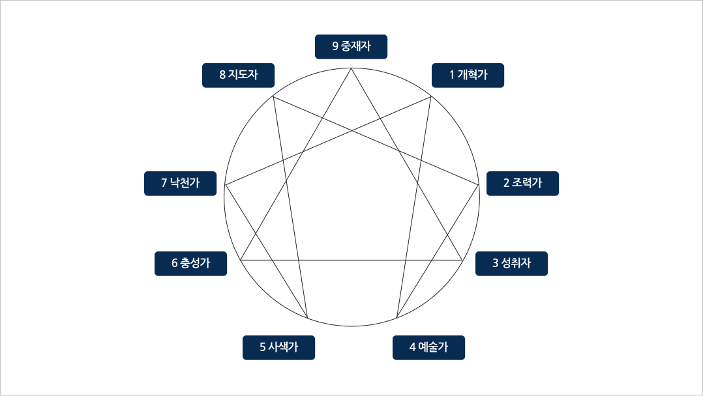

제목H3

성격유형
자신의 성격, 능력, 적성 혹은 현재 심리상태 등에 대해 좀 더 객관적으로 알고 싶을 때, 개인 또는 그룹으로 검사가 가능합니다.
배재인이라면 누구나 신청할 수 있고 검사비는 무료입니다.
애니어그램이란?
에니어그램이란 9가지 성격 유형과 그 성격 상호간의 관계를 설명해 주는 것으로, 자신의 참의미를 찾고 서로 존중하는 법을 알도록 도움을 주는 검사입니다.
희랍어에서 ‘에니어(ennear, 아홉)’와 ‘그라모스(grammos, 점·선·도형)’라는 단어의 합성어로, ‘아홉 개의 점이 있는 도형’이라는 의미입니다.
에니어그램에는 유형의 근본이 되는 성격과 그 이면에 있는 자신에 대해서도 알아 볼 수 있습니다.
- 검사문항: 108문항, 5개 척도
- 소요시간: 30분
9가지 유형

MBTI란?
내향-외향(에너지 방향), 감각-직관(인식기능), 사고-감정(판단기능), 판단-인식(생활양식)의 4가지 선호 경향에 따라 성격유형을 16가지로 구분하고 그 안에서 자신의 성격유형을 파악하여 자신과 타인을 이해하는데 도움을 주는 검사입니다.
성격 유형은 사람들 간의 성격 차이를 나타내며, 개인의 고유한 적성·흥미·대인관계·의사소통 등과 관계가 있습니다.
- 검사문항: 93문항
- 소요시간: 30분
16가지 유형
| 유형 | |||
|---|---|---|---|
| ISTJ 세상의 소금형 |
ISFJ 임금 뒤편의 권력형 |
INFJ 예언자형 |
INTJ 과학자형 |
| ISTP 백과사전형 |
ISFP 성인군자형 |
INFP 잔다르크형 |
INTP 아이디어 뱅크형 |
| ESTP 수완 좋은 활동가형 |
ESFP 사교적인 유형 |
ENFP 스파크형 |
ENTP 발명가형 |
| ESTJ 사업가형 |
ESFJ 친선 도모형 |
ENFJ 언변 능숙형 |
ENTJ 지도자형 |
TCI란?
기질 및 성격검사(TCI)는 개인의 고유한 인성을 종합적으로 평가하는 심리검사로 크게 ‘기질’과 ‘성격’ 두 부분으로 나누어 검사합니다. 타고난 기질 뿐만 아니라 환경과의 상호 작용에서 형성되는 성격 등을 이해하는데 도움이 됩니다.
‘기질’부분은 자극 추구·위험 회피·사회적 민감성·인내력, ‘성격’ 부분은 자율성·연대감·자기초월의 척도로 구성되어 있습니다.
- 검사문항: 140문항, 5개 척도
- 소요시간: 40~50분